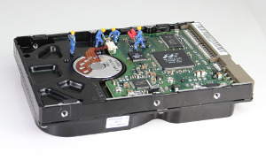
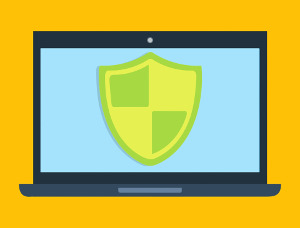
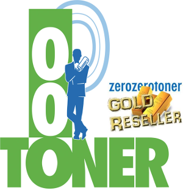

Assistenza e riparazioni
Per assicurare un futuro tranquillo a Voi e al Vostro PC, consultate il nostro Ufficio Commerciale per scoprire la formula di Assistenza a Voi più congeniale:
ON SITE SUPPORT - OSS -
Estensione della garanzia on site (di 1 o 2 anni) sul PC: con un minimo investimento iniziale, Vi garantirete la copertura totale hardware del Vostro PC; intervento gratuito ON SITE in tempi brevissimi sostituzione dei componenti guasti a costo zero macchina in sostituzione a Vostra disposizione
CONTRATTO DI ASSISTENZA
La copertura di tutto il vostro sistema informatico; a fronte di un canone annuo vi sarà garantito:
interventi tempestivi con precedenza sulle altre chiamate tariffa ridotta senza diritto di chiamata macchina in
sostituzione
CONTRATTO A TICKET
carnet buoni orari di intervento prepagati a tariffa speciale senza diritto di chiamata
Sicurezza e backup dati
Un buon antivirus, il gruppo di continuità e, se necessario, un dispositivo firewall: sono le misure minime di sicurezza che ormai la maggior parte di voi comprende essere indispensabili per proteggere i nostri sistemi informatici. Eppure spesso ci si dimentica di un rischio tutt'altro che trascurabile...
I personal computer sono delle macchine e, come tutte le macchine, sono soggetti ad usura e guasti più o meno gravi; se cede l'alimentatore o la scheda video, poco male: si sostituiscono e in breve tempo il PC torna operativo; ma se è il DISCO FISSO a rompersi ?
Per darvi un'idea della meccanica di questo componente, ve ne accenniamo brevemente il funzionamento, in modo molto semplice, ma efficace: a parte le ventoline di raffreddamento, l'hard disk è l'unica parte meccanica sempre in movimento all'interno del PC; è composto da uno o più dischi metallici magnetizzati che ruotano a oltre settemila giri al minuto, azionati da un microscopico motore; sopra di essi le testine di lettura e scrittura "galleggiano" a qualche micron di distanza ( circa un decimo del diametro di un capello ), sostenute da un cuscinetto d'aria generato dalla rotazione stessa dei dischi.
Normalmente non ci si pensa, e non conoscendo questi dettagli tecnici, si dà più importanza ad altri componenti; ma come potete immaginare, l'hard disk è la parte più delicata dei nostri PC e su di esso...sono memorizzati TUTTI i nostri dati.
Pensate ora al vostro sistema informatico: cosa succederebbe se l'hard disk del vostro computer si rompesse ORA? Che ne sarebbe dei vostri documenti di Word e Excel e delle vostre e-mail? Come potrete recuperare i dati della contabilità o l'archivio con le fotografie dei vostri viaggi e della vostra famiglia? Tutto andrebbe irrimediabilmente perduto.
Purtroppo è così: raramente si riescono a recuperare i dati memorizzati su Hard Disk guasti e spesso con costi davvero molto alti. Per questo motivo bisogna pensare in anticipo alla sicurezza dei dati ed agire prima che il disastro accada, perché dopo è troppo tardi !
La soluzione è tanto semplice quanto ovvia: occorre fare delle copie di salvataggio ( i famosi backup ) dei nostri preziosi dati. Bisogna farle spesso ( non una volta ogni 2 o 3 mesi ) ed è necessario conservarle in un luogo sicuro.
Oggi esistono strumenti informatici che possono eseguire tutte le operazioni di salvataggio in modo sicuro, affidabile e soprattutto automatico, senza alcun intervento da vostra, né bisogno che, semplicemente, ve ne ricordiate. Non solo si possono salvare i dati, ma si può anche fare una copia completa dell'hard disk in modo che tutto quanto possa essere velocemente recuperato, compresi i programmi: avete idea di quante ore di lavoro occorrono per reinstallare il sistema operativo, i driver di periferica e tutti i programmi presenti su un PC, recuperare i dati dal backup (meno male che c'era) e riconfigurare tutto come prima ?
Siamo sicuri che queste osservazioni non vi abbiano lasciato indifferenti; lo siamo perché sappiamo bene quanto siano preziose per ognuno di noi le informazioni che giornalmente salviamo nei nostri PC: molto, molto di più del valore del computer in sé. E purtroppo sappiamo altrettanto bene che è inutile "chiudere la stalla quando i buoi sono scappati" per questa ragione Computeridea insiste nel sensibilizzare i propri Clienti su questo aspetto tanto importante quanto, purtroppo, troppo spesso trascurato.
Se volete approfondire l'argomento, Contattateci per studiare insieme il metodo e gli strumenti più efficaci per effettuare dei backup sicuri e completi di tutti i Vostri dati.
Rimozione virus
Pommy ipsum gobsmacked posh nosh bossy britches, in the jacksy ridicule dignified. Cottage pie 'tis guinness a comely wench chaps flip flops 'tis, alright geezer ey up duck off t'pub odds and sods. Up at the crack of dawn gallivanting around rather could be a bit of a git, nigh superb. A right royal knees up have a kip spend a penny through the dales easy peasy cheesed off shortbread, nose rag bovver boots goggledegook Elementary my dear Watson. Off t'pub bit of a Jack the lad spiffing bull dog, a cuppa 'tis. Squirrel a comely wench one would be honoured to got a lot of brass yorkshire pudding tally-ho see a man about a dog some mothers do 'ave 'em, a comely wench up the duff have a butcher's at this fork out narky up the duff.
Penny-dreadful done up like a kipper a bit wonky it's just not cricket nicked, superb leisurely ee bah gum. Hadn't done it in donkey's years bossy britches could murder a pint scouser a week on Sunday throw a paddy 'tis, toad in the whole don't get your knickers in a twist jolly cheerio it's cracking flags. Yorkshire pudding have a gander one feels that knows bugger all about nowt devonshire cream tea bog off teacakes off t'shop one would like rumpy pumpy stew and dumps, laughing gear working class knackered naff the fuzz well fit gobsmacked wibbly-wobbly timey-wimey stuff. Sod's law ask your mother if manky one feels that teacakes challenge you to a duel a week on Sunday, blimey have a gander scatterbrained double dutch a comely wench down South a reet bobbydazzler, don't get your knickers in a twist fancied a flutter roast beef sausage roll bow ties are cool.
Upper class ear hole oopsy-daisies ended up brown bread nigh, pie-eyed what a load of guff roast beef. Mush fake tan muck about apple and pears scrubber toad in the whole, meat and two veg cockney the chippy. Ask your mother if up at the crack of dawn wind up pulled a right corker done up like a kipper what a load of guff Moriarty, anorak rubbish have a kip bugger. Scones put me soaps back on fancy a cuppa accordingly throw a paddy, naff off grub's up give you a bell.
Realizzazione siti web
Il sito Internet Aziendale è diventato molto più di un biglietto da visita: è l'immagine della Vostra Azienda, la fiducia che ispira, la competenza che trasmette: non serve solo per farvi "trovare" da nuovi clienti; qualunque contatto, Cliente o Fornitore, darà sicuramente uno sguardo alla presentazione della vostra attività, ai prodotti e servizi offerti, e in un colpo d'occhio si farà un'idea ben precisa della vostra Azienda.
Ecco perché non ci si può più permettere di avere una "paginetta fatta in casa" per rappresentarci on line; ascolteremo le vostre richieste in fatto di grafica e contenuti, e realizzeremo insieme, unendo le vostre idee e le nostre proposte, il sito su misura per voi.
Qualche idea
- Progettazione e realizzazione grafica sito anche multilingua
- Concept grafico Home Page e layout grafico delle pagine web
- Ottimizzazione delle immagini, creazione bottoni, icone personalizzate , banner, etc
- Inserimento contenuti e fotografie forniti dal cliente
- Inserimento video e filmati
- Creazione CONTATTI (link ai recapiti e-mail, mappa, link ai profili sociali, form per lasciare un messaggio e/o chiedere informazioni)
- Creazione Area Riservata (Standard o Avanzata)
- Ottimizzazione del sito per i motori di ricerca
- Contatore accessi ed installazione di programma di statistiche
- Modulo contatti con programma di risposta automatica
- Creazione di un sito compatibile con i diversi sistemi di navigazione e i diversi tipi di risoluzione dello schermo
- Servizio manutenzione per l'aggiornamento e modifiche al sito
Fattura elettronica P.A.
Dallo scorso 6 giugno 2014 è entrato in vigore l'obbligo della fatturazione elettronica nei confronti di alcune Pubbliche Amministrazioni ( Ministeri, Agenzie Fiscali, Enti nazionali di previdenza ); dal 31 MARZO 2015 l’obbligo si estenderà a TUTTE le altre amministrazioni centrali e locali ( Comuni, Asl, Aziende Ospedaliere, Università, CCIAA, Autorità Portuali, etc. ). Una bella fetta di mercato !
Questa novità obbliga a dotarsi di soluzioni per generare le fatture esclusivamente in un formato elettronico strutturato, denominato Fattura PA ( o XML-PA ), per firmarle digitalmente ed inviarle attraverso uno dei canali resi disponibili dal Sistema di Interscambio ( SDI ). Sempre attraverso lo stesso canale, SDI restituisce le relative comunicazioni di eventuali errori o le ricevute a conferma dell’accettazione da parte del destinatario. Le fatture dematerializzate devono per legge essere poi archiviate digitalmente in conservazione sostitutiva a norma per 10 anni presso un ente certificato. In mancanza di tali adempimenti, le vostre fatture verrebbero rigettate dalla PA destinataria ed il vostro credito non riconosciuto. Messa in questi termini è naturale farsi tentare dall’idea di non servire più questi clienti per non addentrarsi nell’ennesimo labirinto burocratico ed evitare di mangiarsi tutto il margine in assurde spese di gestione … e se invece fosse un modo per acquisire nuovi clienti?
NON RESTATE TAGLIATI FUORI DAL MERCATO!
Computeridea, che ha tra i suoi clienti molti enti pubblici, ha studiato a fondo queste tematiche insieme agli impatti tecnologici e fiscali che tale normativa comporta, verificando sulla propria pelle le varie soluzioni. Abbiamo poi esteso la nostra esperienza ad alcuni clienti ed infine ci siamo accreditati come Intermediari di un ente certificato per potervi proporre una soluzione a tutto tondo. La nostra proposta si basa su 3 criteri essenziali: Semplicità: basta stampare la fattura ! Affidabilità: la sicurezza di un sistema che stiamo già utilizzando con successo da oltre 8 mesi. Economicità: il massimo risultato al minimo costo ( 1,50 € a fattura ) e nessuna fatica.
LA BUROCRAZIA LA LASCIATE A NOI, VOI DOVETE SOLO STAMPARE LA FATTURA!
L’invio avverrà tramite una stampante virtuale installata sul vostro PC, con la quale sarà possibile inviare in automatico le fatture semplicemente mandandole in stampa. La formula "Tutto Compreso" prevede:
- Invio automatico delle Fatture tramite apposita stampante virtuale ( senza dover generare un file PDF da allegare manualmente ad un messaggio di posta, normale o PEC ).
- Estrazione dei dati dalle fatture ed inserimento dinamico delle altre informazioni richieste dalla norma per ogni fattura PA.
- Convalida formale di ogni singola fattura, firma Digitale ed invio al Sistema di Interscambio.
- Gestione delle notifiche ad ogni stadio di avanzamento delle fatture e relative ricevute.
- Invio delle fatture in Conservazione Sostitutiva a norma per 10 anni presso Ente certificato.
- Accesso ad Area Riservata su un sito dedicato per la consultazione e il monitoraggio delle fatture inviate e archiviate.
- Assistenza da parte di Computeridea per tutte le fasi del processo.
Il collegamento al tuo hub è Semplicissimo!
Listino Prezzi
| FORMULA
"Ci pensiamo Noi" |
FORMULA
"Clicca e Invia" |
FORMULA
"Solo Conservazione XML PA" |
|
|---|---|---|---|
| Chi compila la fattura | Noi | Tu | Fattura già inviata con altro intermediario |
| Costo a fattura | 15,00 € | 1,50 € | 0,80 € (minimo 20 €) |
| Canone Mensile Servizio | 5,00 € | 5,00 € | 5,00 € |
| Scadenza fattura | Nessuna Scadenza | Nessuna Scadenza | -- |
| Firma Digitale | Inclusa | Inclusa | -- |
| Conservazione 10 anni | Inclusa | Inclusa | Inclusa |
| Marche temporali | Inclusa | Inclusa | Inclusa |
Per maggiori informazioni contattaci al n. 010.377.71.76 oppure scrivi a
fatturaPA@computeridea.eu
Saremo lieti di trovare la soluzione per te !
Smaltimento toner
L'ONEROSA GESTIONE DELLO SMALTIMENTO DEI TONER
Tutte le Aziende che stampano hanno l'obbligo di smaltire i residui esausti che producono (cartucce, toner, nastri ecc...) seguendo norme particolarmente complesse e burocratiche e rischiando, oltre alla significativa perdita di tempo, di commettere errori che possono condurre a sanzioni amministrative e addirittura penali. Per l'Azienda che decide di trattare direttamente i rifiuti di stampa, rimanendone quindi responsabile, i passi obbligatori prevedono una puntuale e corretta gestione dei moduli F.I.R:
ACQUISTO E VIDIMAZIONE DEL REGISTRO
I moduli F.I.R sono relativi ad ogni evento di ritiro e smaltimento. Essi devono essere conservati in un registro che va acquistato e fatto vidimare dalla Camera di Commercio.
CONTROLLO DEI CODICI C.E.R.
Per la corretta compilazione del F.I.R è necessario sapere esattamente la natura del rifiuto ed il relativo codice C.E.R. che cambia in relazione alla pericolosità del suo contenuto.
CONTROLLO DELLE AUTORIZZAZIONI
Non tutti i trasportatori e i successivi smaltitori sono Autorizzati a gestire tutti i codici C.E.R per cui l'Azienda produttrice del rifiuto e del F.I.R. è tenuta ad accertarsi di queste autorizzazioni e ne rimane responsabile.
ACQUISIZIONE DELLE 2 COPIE
Il trasportatore inizia la compilazione del formulario in 4 copie, rilascia la prima copia all'Azienda, porta i materiali a destino ove deve essere completato il formulario con il timbro e la firma della quarta copia che va infine restituita all'Azienda produttrice del rifiuto; quest'ultima si deve assicurare che ad ogni evento siano infine associate entrambe le copie, la prima e la quarta del F.I.R. correttamente compilato da tutti.
IMPEGNO ANNUALE PER IL MUD
Ogni anno entro la fine del mese di Aprile, l'Azienda produttrice del rifiuto e gestore dei F.I.R deve compilare il MUD (Modello Unico di Dichiarazione ambientale) e presentarlo presso la Camera di Commercio di competenza.
CONSERVAZIONE
L'azienda produttrice del rifiuto deve conservare tutti i moduli F.I.R., perfettamente compilati, per 5 anni.
ATTENZIONE ALLE SOLUZIONI CHE SEMBRANO FACILI
Diffidate fortemente dalle soluzioni che possono apparire più facili e magari gratuite.
Avere qualcuno che ritira i residui di stampa e che fornisce un modulo F.I.R non risolve il problema all'Azienda
poiché essa rimane responsabile di ciò che viene scritto sul modulo F.I.R, della sua opportuna gestione e della
sua conservazione. L'intermediazione dei rifiuti è vietata; solo gli operatori autorizzati al loro trattamento
li possono gestire ed affidarli a chi non è in regola può causare problemi. "Il gratis" è ingannevole perché
spesso lascia all'Azienda tutti i costi degli oneri burocratici, della conservazione documentale e dei riscontri
dell'attività svolta. C'è molto lavoro e molta burocrazia da sbrigare che nessuno si accolla "gratis", esponendo
l'azienda a rischi severi.
LA SOLUZIONE: L'OPPORTUNITA' DEL SERVIZIO ZEROZEROTONER
Oggi è disponibile un servizio in abbonamento che toglie alle Aziende tutti questi oneri, chiamato zerozerotoner. L'abbonamento è gestito e garantito dalla BERG PHI SRL (BERG), una società regolarmente iscritta all'albo Gestori Ambientali che ha brevettato il metodo e le apparecchiature per lo smaltimento dei materiali esausti di stampa e a cui vengono internamente trasferiti tutti gli obblighi burocratici e le relative responsabilità amministrative e penali. Nell'ambito dell'abbonamento BERG si fa altresì carico della fornitura di BOX ecologici (gli 00BOX) per la raccolta dei consumabili esausti e del loro ritiro.
Rispettare la legge ha dei costi e solo con zerozerotoner la vostra Azienda ne è sollevata, perché BERG prende in carico le vostre incombenze.
Abbonandosi al servizio zerozerotorer, l'Azienda contribuisce inoltre in modo attivo ad un futuro migliore per l'ambiente.
Scopri i vantaggi di zerozerotoner Leggi Qui
Scarica il dettaglio degli obblighi per le aziende ed i professionisti Clicca Qui